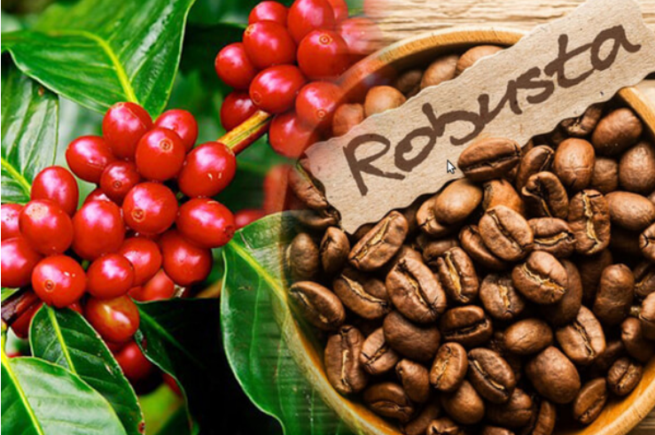

Cà phê Rôbusta cũng gọi là Cà phê vối
06/08/2021Cà phê vối hay còn được gọi với tên khoa học là Robusta là sản phẩm cà phê được Việt Nam xuất khẩu nhiều nhất. Giống cà phê này còn đạt sản lượng 90 đến 95% trên tổng sản lượng của cả nước. Tuy cà phê Robusta có độ phổ biến khá rộng rãi nhưng lại có rất ít người hiểu rõ về cà phê vối (cà phê robusta).
Vì thế, bài viết sau đây sẽ giúp bạn hiểu rõ hơn về loại cây trồng thú vị này.
Định nghĩa về cà phê vối (cà phê robusta)
Vào những năm 1800, những cây cà phê vối đầu tiên được tìm thấy tại Congo, nước Bỉ. Sau đó, giống cà phê này được đưa tới Đông Nam Á vào những năm 1900. Tuy nhiên, không may sau đó, một cơn dịch bệnh gỉ sắt đã khiến cà phê robusta bị càn quét tại rất nhiều nước.
Hiện nay, cà phê Robusta đã phát triển lớn mạnh và chiếm 30% đến 40% tổng sản lượng thế giới. Bởi lẽ, Robusta có năng suất rất cao, cây trồng từ 3 đến 4 năm là có thể thu hoạch. Bên cạnh đó, cà phê vối chuộng sống ở vùng nhiệt đới, với độ cao là dưới 1000m so với mực nước biển. Nhiệt độ ưa thích của cây khoảng 24-29C, lượng mưa khoảng trên 1.000 mm.
Hương vị và chất lượng cà phê Robusta
Chắc hẳn mọi người đều biết cà phê vối được sử dụng phổ biến nhất nước ta bởi hương vị đậm đà khó quên. Nguyên do cho điều này chính là hàm lượng caffein khá cao trong robusta. Không nhẹ nhàng như cà phê chè, cà phê vối có hàm lượng caffein gấp đôi cà phê chè, cụ thể là từ 3% đến 4%.
Khi ngửi cà phê Robusta chưa rang sẽ thấy mùi giống như đậu phộng tươi. Mùi cà phê Robusta rang mộc nguyên chất sẽ có mùi thơm thoang thoảng. Khi ngửi thật kỹ giống như có mùi cao su bị đốt cháy.
Tuy nhiên, cà phê vối lại không tinh khiết như cà phê chè. Do đó, khi kết hợp hai loại cà phê này lại sẽ tạo nên một sự hòa quyện tuyệt vời: hàm lượng caffein vừa phải, độ tinh khiết vừa phải và độ thơm ngon hảo hạng bậc nhất.